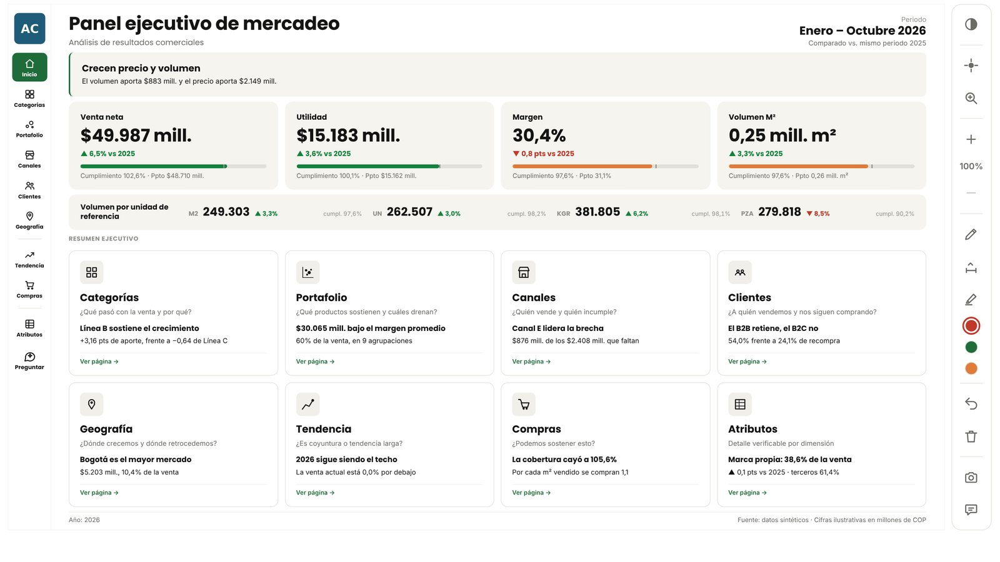

Panel ejecutivo de mercadeo: el mismo análisis en Power BI y en un tablero web interactivo
Rediseño completo del análisis comercial de una empresa del sector de acabados para la construcción. Dos entregables sobre el mismo modelo: un informe de Power BI de 16 páginas (conexiones, modelo semántico y 633 medidas DAX) y un tablero web interactivo, de uso interno del equipo y la gerencia, que replica el informe y se verifica automáticamente contra el modelo.

Contexto y problema
Muchos reportes, pocas respuestas
El tablero comercial mostraba cifras, pero no respondía preguntas de negocio. Cada página se leía distinto y los textos con cifras se escribían a mano, así que quedaban desactualizados.
Calidad desigual en el origen
Unidades de medida mezcladas en el volumen, campos sin asignar en el ERP, filtros que no propagaban al presupuesto y una migración de infraestructura (MySQL → SAP BW) en curso.
Una lectura ejecutiva confiable
Que cada página responda una pregunta, que ningún texto con cifras se escriba a mano y que la versión web diga exactamente lo mismo que el modelo, en cualquier año y filtro.
Qué hice
- Auditoría de calidad de datos con bitácora de hallazgos y su efecto en las cifras.
- Modelo semántico de 19 tablas y 31 relaciones, con calendario propio y comparación contra el mismo periodo del año anterior.
- 633 medidas DAX (365 documentadas), incluidas las narrativas: titulares y notas que cambian solas con los datos.
- Conexiones en Power Query a SAP BW, SharePoint y Azure Data Lake, con un protocolo para cambiar de origen sin romper el informe.
- Informe de 16 páginas en formato PBIR con tema, navegación y reglas de construcción propias.
- Narrativa de 16 vistas: qué pasó → qué productos → quién vende → a quién → dónde → desde cuándo → ¿es sostenible?
- Sistema visual propio: tokens de color claro/oscuro, tipografía, componentes y reglas de tablas y gráficos.
- Réplica web con herramientas de lectura: tamaño completo, «ver información», descarga de imagen, comentarios y asistente.
- Pruebas automáticas y un sistema de diseño documentado para replicarlo en otros tableros.
Arquitectura y conexiones
Método
Cada decisión de diseño se mostró en una captura (o en 2–3 opciones lado a lado), se aprobó y se registró con su porqué. Una decisión registrada no se reabre sin motivo. Cada medida nueva se propuso, se aprobó y se validó con DAX contra el modelo antes de construir el visual.
Usé Claude conectado al modelo de Power BI (servidor MCP) para leer y validar medidas, evaluar los contextos de la versión web, generar el código y correr las pruebas. Los criterios, las reglas y la aprobación final fueron míos; la IA hizo el trabajo repetible.
Power BI: datos, modelo, DAX e informe
Conexiones de datos (Power Query)
Modelo semántico
Diagrama generado desde el TMDL del proyecto: las 19 tablas y las 26 relaciones entre ellas (hay 5 más hacia tablas de fecha automáticas, 31 en total). Centro: tablas de hechos; a los lados: dimensiones compartidas. Por confidencialidad, los nombres de tablas y columnas son genéricos y solo se muestran columnas representativas; los conteos son los reales.
| Tabla | Rol | Columnas | Medidas |
|---|---|---|---|
hechos_ventas | Hecho | 46 | 620 |
hechos_ppto_oficina | Hecho | 13 | — |
hechos_ppto_producto | Hecho | 19 | 2 |
hechos_compras | Hecho | 19 | 11 |
hechos_inventario | Hecho | 11 | — |
hechos_importaciones | Hecho (aislada) | 28 | — |
dim_producto | Dimensión | 36 | — |
dim_agrupacion | Dimensión | 2 | — |
dim_canal | Dimensión | 2 | — |
dim_oficina | Dimensión | 2 | — |
dim_unidad | Dimensión | 4 | — |
dim_proveedor | Dimensión | 3 | — |
dim_ciudad | Dimensión | 3 | — |
dim_municipio | Dimensión | 12 | — |
dim_calendario | Dimensión | 3 | — |
dim_año | Dimensión | 2 | — |
dim_mes | Dimensión | 4 | — |
dim_año_serie | Dimensión | 1 | — |
dim_actualizacion | Dimensión | 2 | — |
El volumen no se suma entre unidades
Metros cuadrados, unidades, kilos y piezas siempre van separados; la tabla de unidades marca cuáles son válidas.
Ningún texto con cifras a mano
Titulares, subtítulos con periodo, notas y narrativas son medidas DAX con formato colombiano.
Periodos comparables
Enero → último mes cerrado contra el mismo tramo del año anterior; las fechas filtran por el calendario para que lleguen también a presupuestos y compras.
La tabla de ventas es un contrato
Al cambiar de origen se conservan nombre, columnas y tipos; así el informe sobrevivió a la migración a SAP BW.
633 medidas DAX
Medidas por sección del informe
Qué devuelven
Casi la mitad devuelve texto: titulares, narrativas, subtítulos con periodo y etiquetas. Las de imagen dibujan barras y cascadas en SVG dentro de tablas.
Funciones más usadas
Efecto precio sin mezclar unidades
Descompone la variación de venta en efecto precio sumando unidad por unidad, solo en unidades válidas (R19).
Efecto Precio Total =
SUMX (
FILTER ( ALL ( 'dim_unidad'[unidad], 'dim_unidad'[es_valida] ), 'dim_unidad'[es_valida] ),
VAR _v = CALCULATE ( SUM ( 'hechos_ventas'[cantidad_ref] ) )
VAR _vpy = CALCULATE ( SUM ( 'hechos_ventas'[cantidad_ref] ),
SAMEPERIODLASTYEAR ( 'dim_calendario'[fecha] ) )
VAR _s = CALCULATE ( SUM ( 'hechos_ventas'[ingreso_neto] ) )
VAR _spy = CALCULATE ( SUM ( 'hechos_ventas'[ingreso_neto] ),
SAMEPERIODLASTYEAR ( 'dim_calendario'[fecha] ) )
RETURN _v * ( DIVIDE ( _s, _v ) - DIVIDE ( _spy, _vpy ) )
)Texto con cifra (R17)
La variación se escribe desde el modelo, con flecha y formato colombiano; vacía si no hay año anterior.
Var Venta Flecha Txt =
VAR _v = [Var % Venta]
RETURN
IF (
ISBLANK ( [Ingreso Neto AA] ),
BLANK (),
IF ( _v >= 0, "▲ ", "▼ " ) & FORMAT ( ABS ( _v ), "0.0%", "es-CO" )
)Barra de cumplimiento en SVG
La barra de una tabla es una imagen SVG generada por DAX: escala con tope de 130 %, marca de meta y color por resultado.
Barra Cumplimiento Canal =
VAR _cumpl = [Cumplimiento Ppto Canal]
VAR _p = MAX ( MIN ( _cumpl, 1.3 ), 0 )
VAR _w = INT ( DIVIDE ( _p, 1.3 ) * 75 )
VAR _c = IF ( _cumpl >= 1, "#12823C", "#E07B39" )
RETURN
IF ( [Canal Con Ppto] = 0 || ISBLANK ( _cumpl ), BLANK (),
"data:image/svg+xml;utf8,<svg xmlns='http://www.w3.org/2000/svg' width='75' height='8'>"
& "<rect width='75' height='8' rx='4' fill='#E1E0D9'/>"
& "<rect width='" & FORMAT ( _w, "0", "en-US" ) & "' height='8' rx='4' fill='" & _c & "'/>"
& "<rect x='58' width='2' height='8' fill='#918F89'/></svg>" )<Página> <Qué> <Formato>: Txt devuelve texto con FORMAT(…, "es-CO"); SVG y Barra devuelven imágenes; Sub Txt es el subtítulo con periodo; Narrativa Ln Txt es la línea n del bloque narrativo. Cada medida nueva se propuso, se aprobó y se validó con DAX contra el modelo antes de usarla; la descripción explica el porqué y es la que muestra «Ver información» en la versión web. Organizadas en carpetas por fase y página.
El informe en Power BI Desktop
1.888 objetos visuales en 16 páginas
Proyecto en formato PBIP/PBIR (texto en carpetas): cada visual es un JSON versionable. El tema, la navegación lateral, los botones de página y la barra de filtros siguen las mismas reglas en todas las páginas.
Tablero web interactivo
Réplica fiel del informe, de uso interno, que se abre en cualquier navegador. No recalcula: lee las cifras que el modelo ya calculó para cada año y filtro (687 contextos) y las pinta con un motor visual propio.
Sistema visual
Positivo, negativo y activo
#12823C
#C0392B
#1F6B3A
#F5F4EF
#171715
Medidas
#1F5C7A
#7A6A8C
#8A6D1F
#2A6FB0
Cada familia, canal y segmento tiene su color
El color no depende del orden: una familia se ve igual en todas las páginas.
#2A6FB0
#7A6A8C
#8A6D1F
Tipografía y geometría
Títulos en Poppins y cuerpo en Segoe UI (la del Power BI). Lienzo de 1920 × 1080, tarjetas con radio de 16 px, una sola escala de espacios y tablas con encabezados centrados.
Las 16 vistas · datos sintéticos
Interfaz en español, el idioma original del informe.
Funciones del tablero web
En el celular
Tema oscuro
Verificación
0 diferencias
Una prueba compara cada texto de la página web con el valor que calculó el modelo, en las 16 vistas y con filtros aplicados.
Desbordes, tablas fijas y tema
Pruebas de desbordes, de encabezados y totales fijos al desplazar, de tema oscuro, de celular y de la barra de herramientas en cinco resoluciones.
Las capturas se miran
Las pruebas encuentran errores; los ojos encuentran lo feo. Ningún cambio se dio por bueno sin revisar las capturas en claro y en oscuro.
Lo que deja el proyecto
Diagnóstico antes que diseño
Un tablero bonito sobre datos malos es peor que no tenerlo. La bitácora de datos cambió cifras antes de que llegaran a una reunión.
Texto como dato
Llevar las narrativas al modelo eliminó la desactualización de los titulares y volvió verificable cada frase.
Un sistema replicable
Metodología, tokens, motor visual y pruebas quedaron documentados para construir los siguientes tableros con la misma lógica.
Las imágenes son capturas reales del diseño, tomadas sobre una copia del modelo cargada con datos sintéticos: cifras, clientes, marcas, proveedores, canales, categorías y el logotipo son ficticios y no se derivan de los de la empresa (no son cifras reales escaladas). Las cifras de construcción (vistas, tablas, relaciones, medidas y pruebas) son reales. El nombre de la empresa se omite.